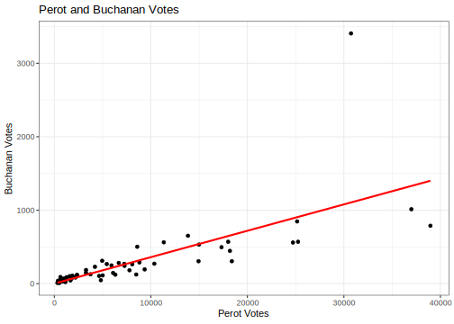

4.3 OLS Regression in R
To run a linear regression in R, we use the lm() function.
The syntax is lm(y ~ x1, data = mydata) for a regression with y as the name of your dependent variable and there is one explanatory variable x1 where mydata is the name of your data frame.
lm(y ~ x1 + x2 , data = mydata) is the syntax for a regression with two explanatory variables x1 and x2, where you would add additional variables for larger multivariate regressions. By default, R will include an intercept term in the regression.
4.3.1 Example: Predicting Current Election Votes from Past Election Votes
In the American presidential election in 2000, there was an actual controversy in how ballots were cast in the state of Florida. Social scientists used data comparing the election results from 1996 in the state with 2000 as one way to help detect irregularities in the 2000 vote count. For more information on the background of this example, you can watch this video.
We will use the data florida.csv available here:
## Load Data
florida <- read.csv("https://raw.githubusercontent.com/ktmccabe/teachingdata/main/florida.csv")This data set includes several variables described below, where each row represents the voting information for a particular county in Florida.
| Name | Description |
|---|---|
county |
county name |
Clinton96 |
Clinton’s votes in 1996 |
Dole96 |
Dole’s votes in 1996 |
Perot96 |
Perot’s votes in 1996 |
Bush00 |
Bush’s votes in 2000 |
Gore00 |
Gore’s votes in 2000 |
Buchanan00 |
Buchanan’s votes in 2000 |
In 2000, Buchanan was a third party candidate, similar to Perot in 1996. One might think that counties where Perot received a lot of votes in 1996 should also receive a lot in 2000. That is: with a one-vote increase in Perot’s vote, we might expect an average increase in Buchanan’s 2000 vote.
We can translate that language into a regression equation:
- \(Buchanan2000 = \alpha + Perot1996 * \beta + \epsilon\)
In R, we run this regression the following way. We will save it as an object fit.1. You can name your regression objects anything you want.
fit.1 <- lm(Buchanan00 ~ Perot96, data = florida)summary(model)provides the summary statistics of the model. In particular, the following statistics are importantEstimate: point estimate of each coefficientStd. Error: standard error of each estimatet value: indicates the \(t\)-statistic of each coefficient under the null hypothesis that it equals zeroPr(>|t|): indicates the two-sided \(p\)-value corresponding to this \(t\)-statistic where asterisks indicate the level of statistical significance.Multiple R-squared: The coefficient of determinationAdjusted R-squared: The coefficient of determination adjusting for the degrees of freedom
We will say more to define these quantities in future sections.
summary(fit.1)
Call:
lm(formula = Buchanan00 ~ Perot96, data = florida)
Residuals:
Min 1Q Median 3Q Max
-612.74 -65.96 1.94 32.88 2301.66
Coefficients:
Estimate Std. Error t value Pr(>|t|)
(Intercept) 1.34575 49.75931 0.027 0.979
Perot96 0.03592 0.00434 8.275 9.47e-12 ***
---
Signif. codes: 0 '***' 0.001 '**' 0.01 '*' 0.05 '.' 0.1 ' ' 1
Residual standard error: 316.4 on 65 degrees of freedom
Multiple R-squared: 0.513, Adjusted R-squared: 0.5055
F-statistic: 68.48 on 1 and 65 DF, p-value: 9.474e-12R also allows several shortcuts for accessing particular elements of your regression results. Examples:
## Vector of the coefficient estimates only
coef(fit.1)(Intercept) Perot96
1.34575212 0.03591504 ## Compute confidence intervals for these coefficients
confint(fit.1) 2.5 % 97.5 %
(Intercept) -98.03044506 100.72194929
Perot96 0.02724733 0.04458275## Table of coefficient results only
summary(fit.1)$coefficients Estimate Std. Error t value Pr(>|t|)
(Intercept) 1.34575212 49.759306434 0.02704523 9.785065e-01
Perot96 0.03591504 0.004340068 8.27522567 9.473505e-12## Extract standard errors only
summary(fit.1)$coefficients[,2] (Intercept) Perot96
49.759306434 0.004340068 ## Variance-Covariance matrix
vcov(fit.1) (Intercept) Perot96
(Intercept) 2475.9885768 -1.360074e-01
Perot96 -0.1360074 1.883619e-05## Note that the square root of the diagonal of this matrix provides the standard errors
sqrt(diag(vcov(fit.1))) (Intercept) Perot96
49.759306434 0.004340068 ## Degrees of freedom
fit.1$df.residual[1] 654.3.2 Plotting Regression Results
We often don’t want to hide our data under a bushel basket or in complicated regression models. Instead, we might also want to visualize data in R. The function plot() and the function ggplot() from the package ggplot2 are two terrific and flexible functions for visualizing data. We will use the plot() function to visualize the relationship between Perot and Buchanan votes. The example below provides a few arguments you can use within each of these functions, but they are capable of much more.
At the core, plotting functions generally work as coordinate systems. You tell R specifically at which x and y coordinates you want your points to be located (e.g., by providing R with a vector of x values and a vector of y values). Then, each function has its own way of allowing you to add bells and whistles to your figure, such as labels (e.g., main, xlab, ylab), point styles ({}), additional lines and points and text (e.g., abline(), lines(), points(), text()), or x and y scales for the dimensions of your axes (e.g., xlim, ylim). You can create a plot without these additional features, but most of the time, you will add them to make your plots look good! and be informative! We will do a lot of plotting this semester.
Note: feel free to use plot() or ggplot() or both. ggplot has similar capabilities as plot but relies on a different “grammar” of graphics. For example, see the subtle differences in the two plots below.
## Plot
plot(x = florida$Perot96, # x-values
y = florida$Buchanan00, # y-values
main = "Perot and Buchanan Votes", # label for main title
ylab = "Buchanan Votes", # y-axis label
xlab = "Perot Votes", # x-axis label
pch = 20) # point type
abline(fit.1, col = "red") # adds a red regression line
## ggplot version
library(ggplot2)
ggplot(data = florida, # which data frame
mapping = aes(x = Perot96, y = Buchanan00)) + # x and y coordinates
geom_point() + # tells R we want a scatterplot
geom_smooth(method = "lm",
se = FALSE, colour = "red",
data = florida, aes(x=Perot96, y=Buchanan00)) + # adds lm regression line
ggtitle("Perot and Buchanan Votes") + # main title
labs(x = "Perot Votes", y = "Buchanan Votes") + # x and y labels
theme_bw() # changes theme (e.g., color of background)`geom_smooth()` using formula 'y ~ x'
## Note: data = florida, aes(x=Perot96, y=Buchanan00) in the geom_smooth line is not necessary if it is the same mapping at the first line. Required if data are differentTip: you might want to save your plots as .pdf or .png after you create it. You can do this straight from your R code. How you do it varies by function. The files will save to your working directory unless you specify a different file path. The code below is the same as above except it has additional lines for saving the plots:
## Plot
pdf(file = "myfirstmleplot.pdf", width = 7, height = 5) # play around with the dimensions
plot(x = florida$Perot96, # x-values
y = florida$Buchanan00, # y-values
main = "Perot and Buchanan Votes", # label for main title
ylab = "Buchanan Votes", # y-axis label
xlab = "Perot Votes", # x-axis label
pch = 20) # point type
abline(fit.1, col = "red") # adds a red regression line
dev.off() # this closes your pdf file
## ggplot version
ggplot(data = florida, # which data frame
mapping = aes(x = Perot96, y = Buchanan00)) + # x and y coordinates
geom_point() + # tells R we want a scatterplot
geom_smooth(method = "lm", ,
se = FALSE, colour = "red",
data = florida, aes(x=Perot96, y=Buchanan00)) + # adds lm regression line
ggtitle("Perot and Buchanan Votes") + # main title
labs(x = "Perot Votes", y = "Buchanan Votes") + # x and y labels
theme(plot.title = element_text(hjust = 0.5)) +# centers the title
theme_bw() # changes theme (e.g., color of background)
ggsave("myfirstmleggplot.png", device="png", width = 7, height = 5) # saves the last ggplot4.3.3 Finding Coefficients without lm
Let’s put our matrix algebra and R knowledge together. In the previous section, we found that \(\hat \beta = (X'X)^{-1}X'Y\). If we do that math directly in R, there is no need to use lm() to find those coefficients.
To do so, we need \(X\) and \(Y\).
Recall \(Y\) is an \(n \times 1\) vector representing the outcome of our model. In this case, \(Y\) is Buchanan00.
Y <- florida$Buchanan00Recall, \(X\) is a \(n \times k\) matrix representing our independent variables and a column of 1’s for the intercept. Let’s build this matrix using cbind which was introduced in section 2.
X <- cbind(1, florida$Perot96)
dim(X)[1] 67 2Great, now we have \(X\) and \(Y\), so it’s just about a little math. Because \(Y\) is a vector, let’s make sure R knows to treat it like an \(n \times 1\) matrix.
Y <- cbind(Y)
dim(Y)[1] 67 1Recall the solve() and t() functions take the inverse and transpose of matrices.
betahat <- solve(t(X) %*% X) %*% t(X) %*% YFinally, let’s compare the results from our model using lm() with these results.
betahat
coef(fit.1) Y
[1,] 1.34575212
[2,] 0.03591504
(Intercept) Perot96
1.34575212 0.03591504 We did it! In the problem set, you will get more experience using the analytic solutions to solve for quantities of interest instead of the built-in functions.
4.3.4 Practice Problems
Here are a couple of (ungraded) problems to modify the code above and gain additional practice with data wrangling and visualization in R. As you might have noticed in the example, there is a big outlier in the data. We will see how this observation affects the results.
- Using a linear regression examine the relationship between Perot and Buchanan votes, controlling for Bill Clinton’s 1996 votes.
- Provide a one sentence summary of the relationship between Perot and Buchanan’s votes.
- Is the relationship significant at the \(p < 0.05\) level? What about the relationship between Clinton and Buchanan votes?
- What are the confidence intervals for the Perot coefficient results?
- What is the residual for the estimate for Palm Beach County–
PalmBeachin thecountyvariable?
- Let’s go back to the bivariate case.
- Subset the data to remove the county
PalmBeach. - Create a scatterplot of the relationship between Perot votes and Buchanan votes within this subset. This time make the points blue.
- Add a regression line based on this subset of data.
- Add a second regression line in a different color based on the initial bivariate regression we ran in the example, where all data were included.
- Describe the differences in the regression lines.
4.3.5 Code for solutions
fit.multiple <- lm(Buchanan00 ~ Perot96 + Clinton96, data = florida)
summary(fit.multiple)
Call:
lm(formula = Buchanan00 ~ Perot96 + Clinton96, data = florida)
Residuals:
Min 1Q Median 3Q Max
-705.06 -49.17 -4.71 27.34 2254.89
Coefficients:
Estimate Std. Error t value Pr(>|t|)
(Intercept) 14.110353 51.644141 0.273 0.78556
Perot96 0.027394 0.010095 2.714 0.00854 **
Clinton96 0.001283 0.001372 0.935 0.35325
---
Signif. codes: 0 '***' 0.001 '**' 0.01 '*' 0.05 '.' 0.1 ' ' 1
Residual standard error: 316.7 on 64 degrees of freedom
Multiple R-squared: 0.5196, Adjusted R-squared: 0.5046
F-statistic: 34.61 on 2 and 64 DF, p-value: 6.477e-11confint(fit.multiple)[2,] 2.5 % 97.5 %
0.007228254 0.047560638 florida$res <- residuals(fit.multiple)
florida$res[florida$county == "PalmBeach"][1] 2254.893florida.pb <- subset(florida, subset = (county != "PalmBeach"))
fit2 <- lm(Buchanan00 ~ Perot96, data = florida.pb)
ggplot(data = florida.pb, # which data frame
mapping = aes(x = Perot96, y = Buchanan00)) + # x and y coordinates
geom_point(color="blue") + # tells R we want a scatterplot
geom_smooth(method = "lm",
se = FALSE, colour = "green",
data = florida.pb, aes(x=Perot96, y=Buchanan00)) + # adds lm regression line
geom_smooth(method = "lm",
se = FALSE, colour = "red",
data = florida, aes(x=Perot96, y=Buchanan00)) + # adds lm regression line
ggtitle("Perot and Buchanan Votes") + # main title
labs(x = "Perot Votes", y = "Buchanan Votes") + # x and y labels
theme(plot.title = element_text(hjust = 0.5)) +# centers the title
theme_bw() # changes theme (e.g., color of background)`geom_smooth()` using formula 'y ~ x'
`geom_smooth()` using formula 'y ~ x'